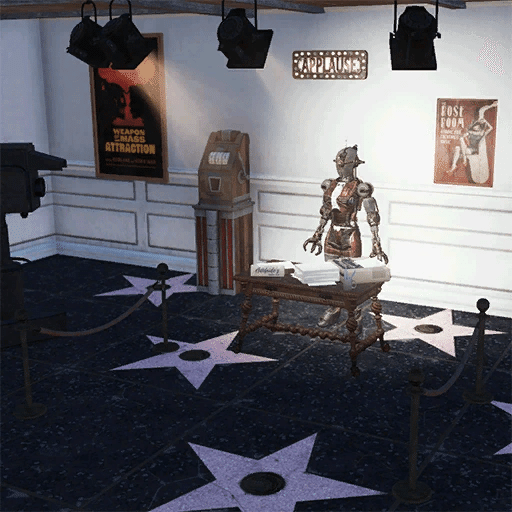

アデレード
人間関係
アデレードは、プレイヤーに出会う前に他の居住人たちと交わしたインタラクションについてコメントしています。
ジョーイ・ベロ: 「私の外装の下に入り込もうとした迷惑なコメディアンがいたけれど、彼は私の神経を逆なですることにしか成功しなかったわ。幸いなことに、彼はまだアトランティック・シティにいるわよ。」
スティーブン・スカーベリー: 「夜遅く、遠くに火が見えたの。その直後、スタジャンを着た変人が駆け寄ってきたわ。彼は私の顔のレーザーの赤色を、どこかの聖なる虫の『祝福された輝き』だと思ったみたい。消え失せろって言ってやったわ。」
レオ・ペトロフ: 「グールに尋問されたわ。最初は私のサインが欲しいのかと思ったけれど、私が交換用のヌカ・コーラを持っていないと聞くと、彼は私を放っておいてくれたわ。」
おばあちゃんジュンコ: 「親切なおばあさんが近づいてきて、比喩的な意味で耳にタコができるほど喋り倒されたわ。彼女は夫と一緒にライブパフォーマンスを見に行っていたみたい。芸術のファンともっと話したかったけれど、彼女が脅かしてきたフルコース料理を準備し始める前に、私は逃げ出さなきゃならなかったの。」
モール: 「スーパーミュータントがあらゆるものを叩き壊しているのを見たわ。珍しい光景ではないけれど、彼がブルジョワジーについて何か言っていたのは間違いないわね。」
ソフィア・ダゲール: 「睡眠に問題を抱えているらしい女性に出会ったわ。彼女は悪夢について延々と話し続けていたわね。」
プレイヤーキャラクターとのインタラクション
インタラクション概要
このキャラクターとはロマンスが可能です。
その他のインタラクション
アトランティック・シティでノート「アデレードへのリマインダー」を見つけると、アデレードとの新しい会話がアンロックされます。彼女はなぜアトランティック・シティを離れたのかを説明します。受信機を取り除くための複数の選択肢（Intelligence 12以上、Luck 12以上、またはRobotics Expertチェック）が表示されます。その後、アデレードとロマンス関係になり、性交渉を持つことが可能になります。
プレイヤーが服を着ていない場合、アデレードは「裸みたいね。まさか私に付き合えなんて思ってないでしょうね」と言います。
プレイヤーがアサルトロン・ヘルメットを着用している場合、彼女は「模倣は称賛の証だと知っているけれど、ダーリン……そのヘルメット、どこで手に入れたの？」と言います。
プレイヤーが回収されたアサルトロンの頭部を武器として使用している場合、彼女は好奇心を示し、見覚えがあると言います。
プレイヤーが彼女にカメラを向けると、ユニークな台詞があります。
デイリーバフ
アデレードのデイリーバフは「Human/Robot Interfacing」として知られています。効果は1時間持続します。
ロボットから受けるダメージが25%減少する。
ロボットに与えるダメージが15%増加する。

持ち物
アデレードのドレス
注目の引用句
「もう一度始めさせて。テーブルにある通り、私はアデレード。私の魅力的なチャームから察したかもしれないけれど、私はパフォーマーよ。ショウガール！ アトランティック・シティからブロードウェイまで夜空を駆け抜ける、輝くスター。あるいは、ビッグ・アップルが大きなクレーターになっちゃったから、新しいブロードウェイがある場所ならどこへでもね。旅の資金にするためにサインを売るつもりだったけれど、拠点になる場所がないと難しいわ。私がこれを解決する間、ここにいさせてくれるかしら？」
「ここ、暑くない？ それとも私だけかしら？」
「あなたは一日の鉄分補給が必要な人のようね。あら、見て。私は30%が鉄分でできているのよ。」
「今のは……今のは私が誘惑していたの……。あら、今の、完全にスルーしちゃったわね？」
「まあ、あなたが本当にそう思うなら、そろそろ……適切な接続をしてもいい頃合いね。」
「はぁ、ショックアブソーバーを交換するように言って。使い古しちゃったみたいだわ。」
「おかえり、ダーリン。あなたが来たからには、そろそろ楽な姿勢をとってみない？」
「ショウガールの人格を削除！ インスタント・キル・モードを起動！ ……なーんてね。」
登場作品
アデレードは『Fallout 76』にのみ登場し、遠征アップデート「Atlantic City: America's Playground」で導入されました。
舞台裏
アデレードに似たキャラクターとして、ジェシーという名の思わせぶりなアサルトロンがランダムエンカウンターの一部になる予定でした。ボイスクリップがゲームファイル内に残っていますが、カットされました。
アデレードは、自分のロボットとしての知覚レベルを説明する際、「gizmos and gadgets galore（ギズモやガジェットがたっぷり）」というフレーズを使用します。これは1989年のアニメ映画『リトル・マーメイド』の楽曲「Part of Your World」に含まれる一節の引用です。
台詞の一つに「本当に？ まあ、女の子をantici...pation（期待）で待たせないで」というものがあります。これは1975年のミュージカル映画『ロッキー・ホラー・ショー』の楽曲「Sweet Transvestite」と、俳優ティム・カリーによる有名な台詞回しのパロディです。
アデレードは、プレイヤーが一日に何度も「インターフェース（接続）」しすぎると失明すると言及します。これは「自慰行為をしすぎると失明する」という古い迷信への言及です。
彼女の挨拶にある「ASSUME THE POSITION」は、『Fallout: New Vegas』に登場する性的使用目的でプログラムされたロボット、フィストーへのオマージュです。
アデレードの遠隔受信機を停止させるコードは「Ice Cream（アイスクリーム）」です。これは『Fallout: New Vegas』において、ストリップ地区に入るためのバイパスコードやREPCONN本社へのアクセスコードとして二度使用された伝統的なコードです。
彼女はニューヨーク市が「大きなクレーター」であると言及します。シリーズにおいてニューヨークの運命が明確に語られたのはこれが初めてです。以前は「ボストンよりもひどい状態」というメモがあるのみでした。
不具合
アデレードが、アサルトロン特有の這いずるアニメーションで表示されるバグが発生することがあります。
これは本来意図された動作ではありません。

アデレード、ただのセクシーロボットかと思いきや、背景にある悲劇や数々のオマージュなど、非常に作り込まれたアライですね！
悲劇のヒロイン: 「Operation Bluebell」によって親友を自分の手で殺めてしまったという過去は、彼女の陽気な振る舞いの裏にある深い傷を感じさせます。
ファンサービス満載: フィストーやアイスクリーム・コードなど、New Vegasファンにはたまらない要素が詰め込まれているのが嬉しいポイントです。
同居人同士の交流: 他の同居人たちに対する彼女の毒舌混じりのコメント（特にジョーイやスティーブンへの反応）は、キャンプを賑やかにしてくれそうで楽しみです。
彼女と「適切な接続」を持つためのスキルチェックはかなり高めですが、苦労して受信機を取り除いてあげた後の彼女との関係性は、アパラチアでの生活に新しい楽しみを添えてくれるはずです。
This article uses material from the Fallout wiki at Fandom and is licensed under the Creative Commons Attribution-Share Alike License.
コミュニティ維持のため、寄付を受け付けております。
> COMMENTS